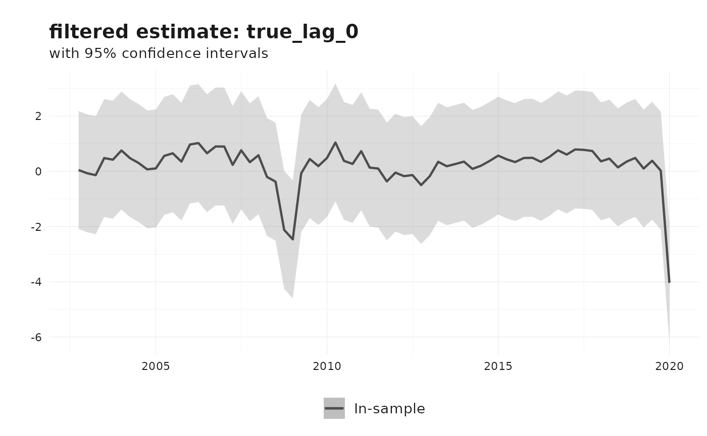
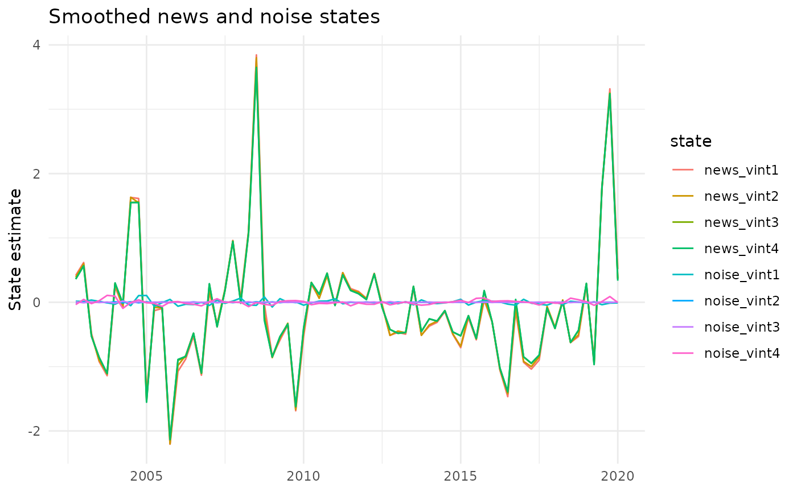

Nowcasting revisions using the Jacobs-Van Norden model
Source:vignettes/nowcasting-revisions-jvn.Rmd
nowcasting-revisions-jvn.RmdThis vignette describes the Jacobs-Van Norden (JVN) revision model as
implemented in reviser::jvn_nowcast(). The presentation
follows the same Durbin-Koopman state-space notation used in the KK
vignette: observations are linked to latent states through
,
state dynamics through
,
and innovations through
,
,
and
(Durbin and Koopman
2012).
The key idea of the JVN framework is that revision errors are not treated as a single residual. Instead, they are decomposed into news and noise. News corresponds to genuinely new information incorporated by later releases, whereas noise corresponds to transitory measurement error that is corrected in subsequent vintages (Jacobs and Van Norden 2011).
Revision decomposition
Let denote the number of vintages used in the model and let be the estimate for reference period available in vintage . Stack the vintages into
Let denote the latent “true” value and let be an vector of ones. The JVN decomposition is
where is the news component and is the noise component.
- captures information that was unavailable when early releases were produced and is therefore rationally incorporated later.
- captures transitory measurement error that is eventually revised away.
This decomposition is the main attraction of the JVN model: it separates revisions that reflect learning about the economy from revisions that reflect mistakes in earlier measurement.
Durbin-Koopman state-space form
In the notation of Durbin and Koopman (2012), the generic state-space model is
The current reviser implementation sets
,
so all uncertainty enters through the transition equation. It also fixes
and places the scale parameters directly in the shock-loading matrix
.
The reviser implementation
jvn_nowcast() implements a restricted but practical
version of the JVN model. The latent true value follows an
AR()
process, and the user may include a news block, a noise block, or both.
Optional spillovers are implemented as diagonal persistence terms in the
selected measurement-error blocks.
When both news and noise are included, the state vector is
where and are both vectors.
Measurement equation
With vintages and an AR() latent process, the observation matrix is
so the observation equation is
If only news or only noise is included, the corresponding block is simply omitted from .
Transition equation
The true-value block follows the companion-form AR() transition
The full transition matrix can therefore be written compactly as
where and are diagonal spillover blocks when spillovers are enabled and zero matrices otherwise.
Shock-loading matrix
The implementation uses and places the innovation standard deviations inside .
- The first structural shock loads on the latent true value with coefficient .
- The news shocks load negatively on the true value and positively on
the news states in the upper-triangular pattern implied by
jvn_update_matrices(). This enforces the idea that later vintages embed information unavailable to earlier vintages. - The noise shocks load independently on the corresponding noise states with coefficients .
This is the main implementation detail that differs from writing
every variance parameter inside
:
in reviser,
is fixed and
carries the scale parameters.
Nested JVN specifications
The function covers the empirically relevant subclasses discussed by Jacobs and Van Norden (2011).
-
include_news = TRUE,include_noise = FALSE: pure news model -
include_news = FALSE,include_noise = TRUE: pure noise model -
include_news = TRUE,include_noise = TRUE: combined news-noise model -
include_spillovers = TRUE: diagonal persistence in the selected measurement-error block(s)
Because these are nested specifications, information criteria are often useful for comparing them, although standard boundary-value caveats still apply.
Example: Euro Area GDP revisions
We illustrate the workflow with four vintages of Euro Area GDP growth
from reviser::gdp.
library(reviser)
library(dplyr)
library(tidyr)
library(tsbox)
library(ggplot2)
gdp_growth <- reviser::gdp |>
tsbox::ts_pc() |>
dplyr::filter(
id == "EA",
time >= min(pub_date),
time <= as.Date("2020-01-01")
) |>
tidyr::drop_na()
df <- get_nth_release(gdp_growth, n = 0:3)
df
#> # Vintages data (release format):
#> # Format: long
#> # Time periods: 70
#> # Releases: 4
#> # IDs: 1
#> time pub_date value id release
#> <date> <date> <dbl> <chr> <chr>
#> 1 2002-10-01 2003-01-01 0.169 EA release_0
#> 2 2002-10-01 2003-04-01 0.124 EA release_1
#> 3 2002-10-01 2003-07-01 0.105 EA release_2
#> 4 2002-10-01 2003-10-01 0.0577 EA release_3
#> 5 2003-01-01 2003-04-01 0.0149 EA release_0
#> 6 2003-01-01 2003-07-01 -0.0133 EA release_1
#> 7 2003-01-01 2003-10-01 -0.0558 EA release_2
#> 8 2003-01-01 2004-01-01 -0.00601 EA release_3
#> 9 2003-04-01 2003-07-01 0.00503 EA release_0
#> 10 2003-04-01 2003-10-01 -0.0616 EA release_1
#> # ℹ 270 more rowsThe resulting data frame has one row per reference period and one
column per release, which is the format expected by
jvn_nowcast().
fit_jvn <- load_or_build_vignette_result(
"nowcasting-revisions-jvn-fit.rds",
function() {
jvn_nowcast(
df = df,
e = 4,
ar_order = 2,
h = 0,
include_news = TRUE,
include_noise = TRUE,
include_spillovers = TRUE,
spillover_news = TRUE,
spillover_noise = TRUE,
method = "MLE",
standardize = FALSE,
solver_options = list(
method = "L-BFGS-B",
maxiter = 100,
se_method = "hessian"
)
)
}
)
summary(fit_jvn)
#>
#> === Jacobs-Van Norden Model ===
#>
#> Convergence: Failed
#> Log-likelihood: 265.89
#> AIC: -493.78
#> BIC: -451.06
#>
#> Parameter Estimates:
#> Parameter Estimate Std.Error
#> rho_1 0.378 0.362
#> rho_2 0.179 0.122
#> sigma_e 0.485 0.128
#> sigma_nu_1 0.001 0.039
#> sigma_nu_2 0.047 0.004
#> sigma_nu_3 0.007 0.058
#> sigma_nu_4 1.088 1.591
#> sigma_zeta_1 0.046 0.012
#> sigma_zeta_2 0.003 0.006
#> sigma_zeta_3 0.008 0.000
#> sigma_zeta_4 0.039 0.010
#> T_nu_1 0.150 0.078
#> T_nu_2 0.107 0.087
#> T_nu_3 0.094 0.097
#> T_nu_4 0.086 0.105
#> T_zeta_1 -0.185 0.423
#> T_zeta_2 -0.900 0.000
#> T_zeta_3 -0.634 0.111
#> T_zeta_4 0.146 0.113The parameter table contains the AR coefficients, the latent-process innovation scale , the news and noise innovation scales, and, when selected, the diagonal spillover persistence parameters.
fit_jvn$params
#> Parameter Estimate Std.Error
#> 1 rho_1 0.378378980 0.361677538
#> 2 rho_2 0.179154350 0.121871675
#> 3 sigma_e 0.485087544 0.127563589
#> 4 sigma_nu_1 0.001000000 0.039456621
#> 5 sigma_nu_2 0.047177947 0.003942688
#> 6 sigma_nu_3 0.006547902 0.057869870
#> 7 sigma_nu_4 1.087596777 1.590627455
#> 8 sigma_zeta_1 0.045978422 0.012375310
#> 9 sigma_zeta_2 0.002968998 0.005930814
#> 10 sigma_zeta_3 0.008115144 0.000000000
#> 11 sigma_zeta_4 0.038936158 0.009748625
#> 12 T_nu_1 0.150090145 0.078021418
#> 13 T_nu_2 0.106883324 0.087466061
#> 14 T_nu_3 0.093954764 0.096747489
#> 15 T_nu_4 0.085946442 0.105141486
#> 16 T_zeta_1 -0.185315823 0.423426245
#> 17 T_zeta_2 -0.900000000 0.000000000
#> 18 T_zeta_3 -0.633719067 0.111249751
#> 19 T_zeta_4 0.145519819 0.113131616The state named true_lag_0 is the current latent true
value.
fit_jvn$states |>
dplyr::filter(
state == "true_lag_0",
filter == "smoothed"
) |>
dplyr::slice_tail(n = 8)
#> # A tibble: 8 × 7
#> time state estimate lower upper filter sample
#> <date> <chr> <dbl> <dbl> <dbl> <chr> <chr>
#> 1 2018-04-01 true_lag_0 0.406 -0.902 1.71 smoothed in_sample
#> 2 2018-07-01 true_lag_0 0.720 -0.589 2.03 smoothed in_sample
#> 3 2018-10-01 true_lag_0 0.746 -0.563 2.05 smoothed in_sample
#> 4 2019-01-01 true_lag_0 0.155 -1.15 1.46 smoothed in_sample
#> 5 2019-04-01 true_lag_0 1.04 -0.273 2.34 smoothed in_sample
#> 6 2019-07-01 true_lag_0 -1.11 -2.42 0.201 smoothed in_sample
#> 7 2019-10-01 true_lag_0 -3.20 -4.56 -1.84 smoothed in_sample
#> 8 2020-01-01 true_lag_0 -4.04 -6.18 -1.90 smoothed in_sampleThe default plot method shows the filtered estimate of the latent true value.
plot(fit_jvn)
We can also inspect the smoothed news and noise states directly.
fit_jvn$states |>
dplyr::filter(
filter == "smoothed",
grepl("news|noise", state)
) |>
ggplot(aes(x = time, y = estimate, color = state)) +
geom_line() +
labs(
title = "Smoothed news and noise states",
x = NULL,
y = "State estimate"
) +
theme_minimal()
Other JVN specifications
Pure-news and pure-noise variants are obtained by switching off the unwanted measurement-error block.
fit_news <- jvn_nowcast(
df = df,
e = 4,
ar_order = 2,
include_news = TRUE,
include_noise = FALSE,
include_spillovers = FALSE
)
fit_noise <- jvn_nowcast(
df = df,
e = 4,
ar_order = 2,
include_news = FALSE,
include_noise = TRUE,
include_spillovers = FALSE
)If desired, the data can be approximately standardized before
estimation using standardize = TRUE. In that case, scaling
metadata are returned in the scale element of the fitted
object.